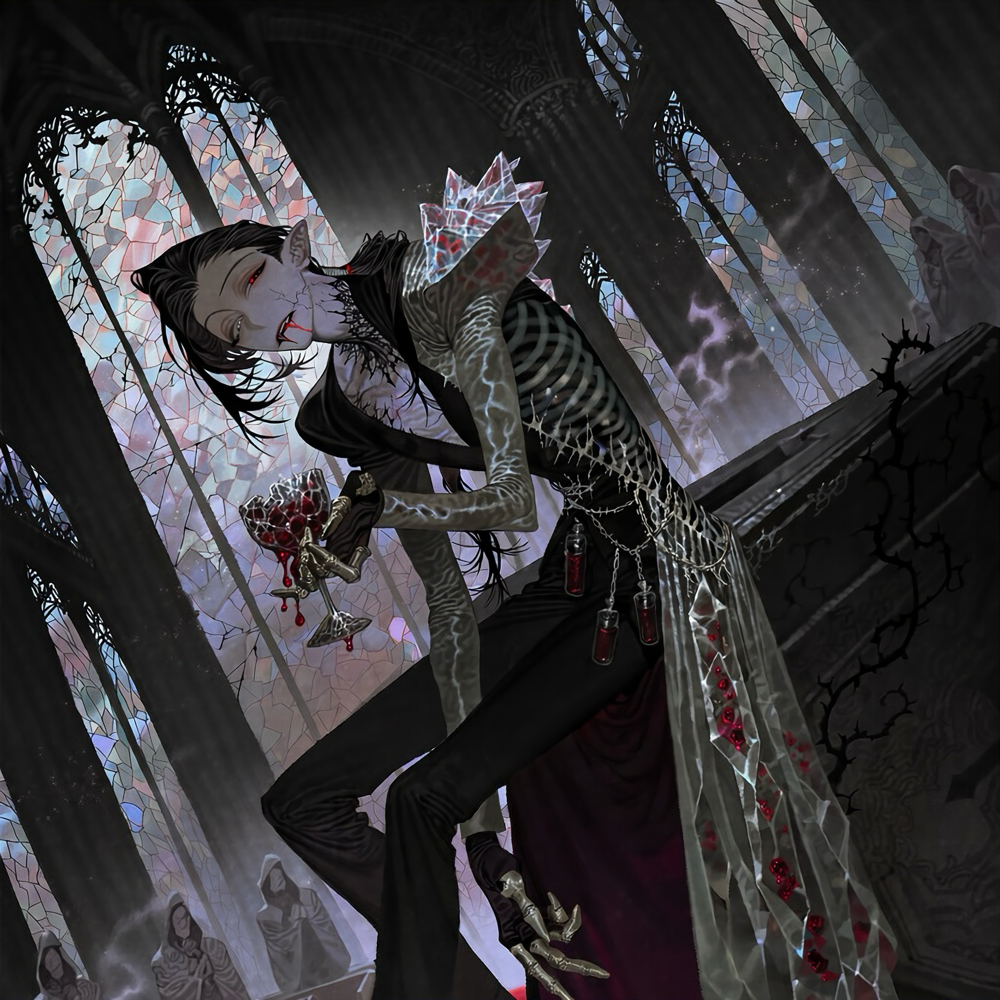

CHARACTER RECORD / 022STATUS: AVAILABLE

✦IMAGE
NOT FOUND
NOT FOUND
アルヴェリヒ
✦ WITH OUTFIT
服装込み
PROMPT DATATXT / 022
masterpiece, best quality, ultra detailed, absurdres, boy, solo, adult male, vampire, supernatural humanoid,
1.5::elongated skeletal silhouette, narrow waist, unnaturally long arms, bony fingers, elegant but unsettling proportions::,
1.4::thin eyebrows, narrow delicate eyebrows, slightly uneven eyebrows::,
1.4::deep-set eyes, heavy drooping eyelids, narrow crimson irises, tiny pupils::,
1.4::prominent elongated vampire fangs, slightly parted lips, blood-stained lower lip::,
ashen gray skin with faint violet undertones, branching black veins visible beneath translucent skin, one cloudy silver eye, the other deep garnet red, sunken temples, sharp cheekbones, narrow pointed chin, subtle cracks around the mouth resembling fractured porcelain, small black crystalline growths emerging from the collarbones, elongated pointed ears with torn edges, long black hair gathered into a loose low knot, thin stray strands framing the face, silver-gray streaks resembling old candle soot,
1.5::original gothic vampire design, decaying ecclesiastical ornamentation, translucent stained-glass exoskeleton::,
asymmetrical mourning coat with one oversized sculptural shoulder, high folded collar resembling overlapping raven feathers, fitted black velvet vest, antique silver clasps, narrow wine-red silk lining, translucent smoky crystal plates attached along one side of the torso, layered coat tails resembling broken stained-glass shards, intricate black embroidery depicting thorny vines and arterial branches, antique rosary chains integrated into the waist harness, small sealed glass vials containing dark red liquid, fingerless gloves with articulated metal finger caps, narrow tailored trousers, pointed boots with oxidized silver heels, elongated black crystal protruding from the sternum, thin glass-like ribs visible beneath the coat opening, tiny droplets of suspended crimson liquid trapped inside translucent ornaments, tarnished silver, aged velvet, brittle crystal, cracked enamel, intricate craftsmanship, black, bone-white, muted burgundy and oxidized silver palette,